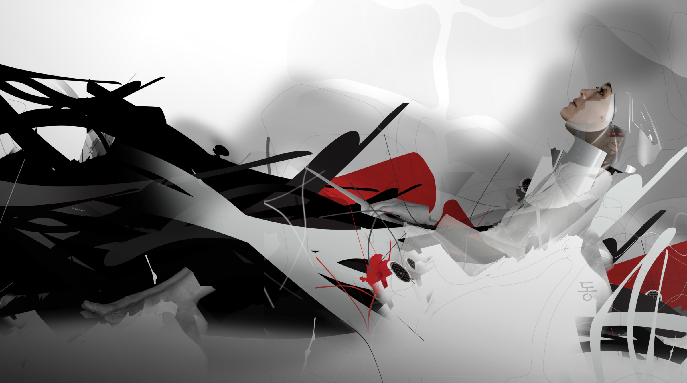
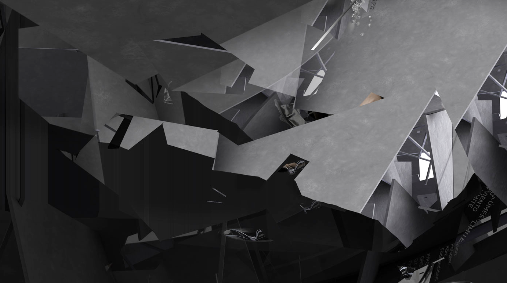

A conceptual and visual proposal about the possible future of our planet built with images, sound, and motion graphics.
Bringing life with motion
The heart of this art piece is all about creativity. We explored many different ways to express it, as long as it worked with the narrative of the animation.
Working closely and collaboratively with the Lead designer - Bernardo Rivavelarde, and the musicians - The Lab, we breathed life into the impressive still images.
We dedicated several weeks to perfecting the tone, motion language and creating a narrative for the final animation.

Detail view
The Process
We use lots of different animation techniques. From frame-by-frame animation to programmatic one using expressions, from organic transitions to static and frozen frame animations, path animation, camera tracking, etc
But every technique had to be implemented with a purpose, a meaning. The goal is to find the most appropriate one based on the image's context to amplify the motion narrative's message.

Detail view
Premiere
Future Nature was presented at the Museo Principe Felipe en La Ciudad de las Artes y las Ciencias de Valencia, Spain.
The exhibition was in Valencia from March 14, 2012, to January 7, 2013, but due to success with more than 1.5 million visitors, it was extended until April 14, 2013.